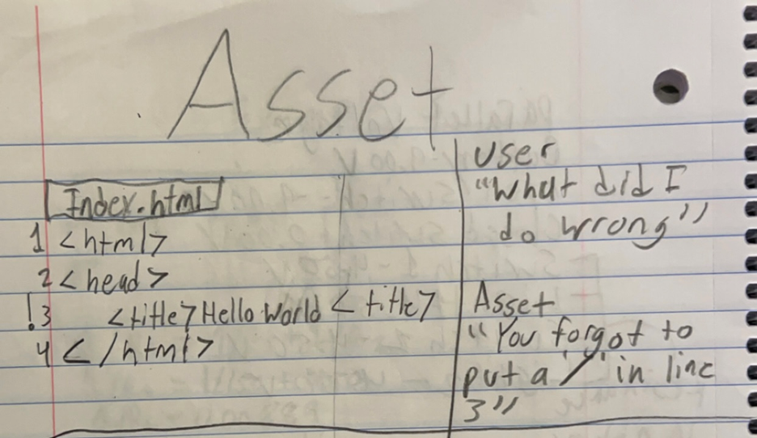

Innovation Claim
The idea aims to help front-end developers manage their time making things easier for them, making it more efficient for them to work.
Project Description
Developing a live service AI mobile app/web application that can be integrated into an IDE that edits and gives suggestions like Grammarly to front-end developers to save time while making sure their work is to their liking. By understanding how to start making websites and designing them will only help the user further understand how to make something your own instead of fully relying on AI. AI Art Generation will help the user figure out how to use AI when it comes to designing.
Concept Art

Introduction Pitch
Project Brief
Below is a preview of my project documentation. You can scroll through it here.